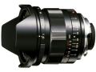

该镜头属于135画幅单焦点手动镜头，采用VM卡口因此还适用于徕卡M型旁轴相机。该镜头是“ULTRON”一款拥有最大F2光圈的超广角镜头。
挂机风景好头，性价比很高
锐度很好~全开略暗角，不过中心画质素质很好，光圈缩几档就能出现星芒，畸变小，用料足
略重，有点大，遮光罩不能拆，原厂镜头盖很不好用，不知道是不是广角原因，色彩没想象出色
非常精致个性十足的镜头，弱光下的片子太棒了，暗部细节及其丰富，色彩润泽而不油腻，个头其实并不太大，尺寸是包括遮光罩在内的，对角 .光圈手感太爽了，转接乃西视角比24MM略广，相当于31.5MM本人感觉更好用！
大光圈紫边及轻微边角画质好。抗眩光能力强大。做工很好，用料足！色彩漂亮、焦外完美！和莱卡比性价比太高了。全开画质就很牛X,风光利器!转接NEX7 没有红移！
遮光罩是固定的 ，有个性！